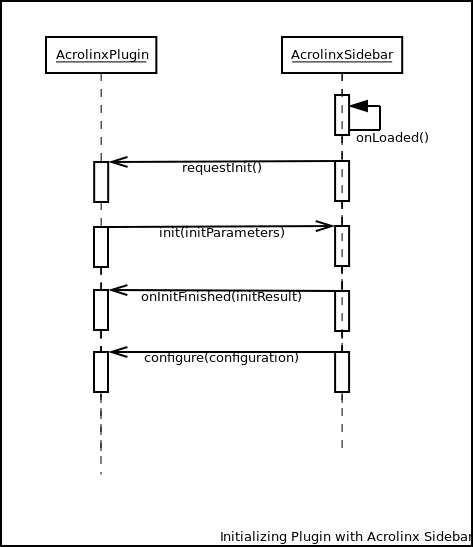
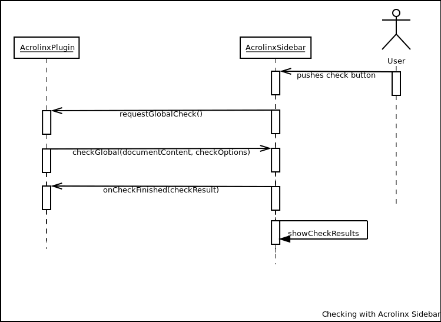

acrolinxPlugin (See AcrolinxPluginInterface).
var acrolinxPlugin = {...}
requestInit.
init.
onInitFinished.
configure and push the latest
configuration to the integration.

requestGlobalCheck is called.
checkGlobal to perform a check.
onCheckResult is called and the Sidebar displays cards for the issues.

selectRanges on the Acrolinx
Integration.replaceRanges.